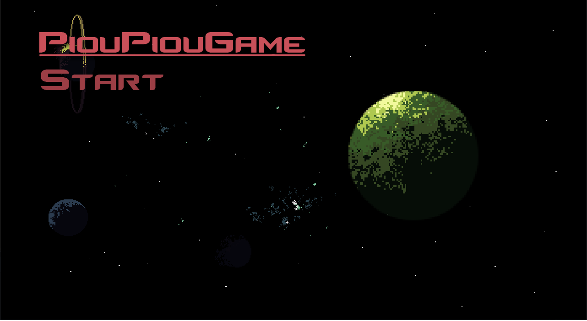
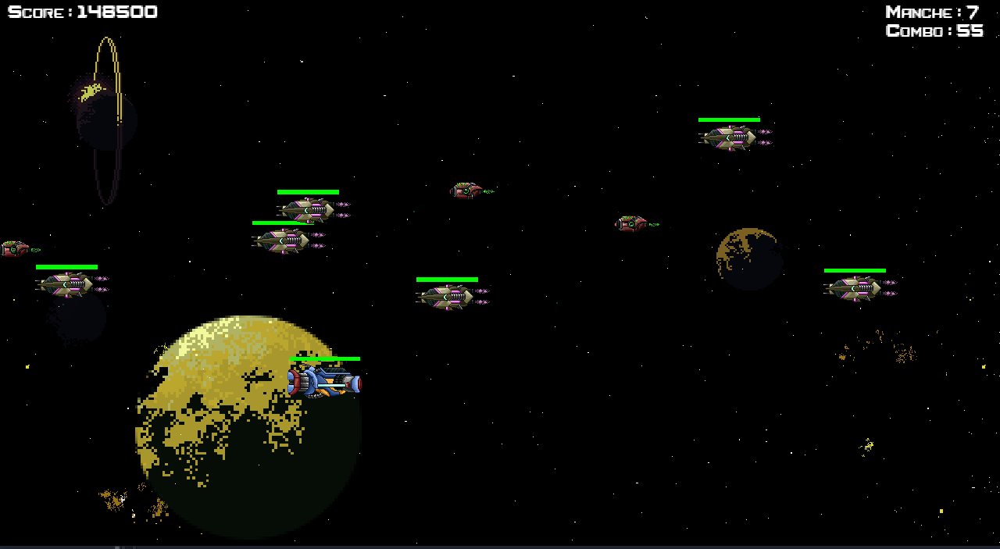

Afin de commencer la programmation dans mes années de lycée. Je me suis mis en tête d'apprendre le développement objet ainsi j'ai pu trouver sur un langage que je connaissais bien le python un outil permettant de créer des jeux vidéo.
C’est pour cela que je me suis lancé dans la création d’un side-scroller avec une boucle de gameplay simple : lancer le jeu, atteindre la manche 10 en survivant et en éliminant les ennemis, dont deux boss, avant de recommencer.
Avec du recul je conçoit que l'API Pygame n'est pas la meilleur mais je souhaite quand meme vous montrer mes débuts. Ce projet m'a appris beaucoup de chose tels que :
- Utilisation de la programmation orientée objet avec l'instanciation des ennemis, des projectiles et la gestion des scripts pour le Game Management.
- Utilisation et animation de sprite 2D ainsi que l'implémentation de fonction de parallax pour les étoiles en arrière plan
- La mise en place d'un systeme d'event pour la musique au lencement du jeu puis dans les menus



Il est téléchargeable sur Itch.io.